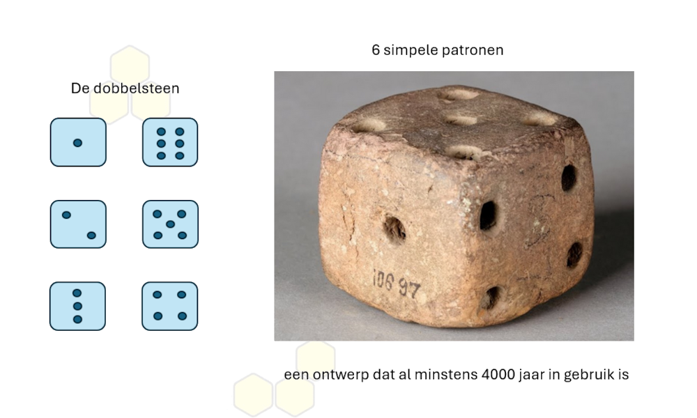

Portfolio Projecten
Still a work in progress.
The best way to predict the future is to create it, Peter Drucker.
Een portfolio project is zowel een manier om je vakkennis te oefenen en vergroten maar ook een kans om je cv meer gewicht te geven. Met een interessant portfolioproject ( hierna pfp ) op je cv kun je je onderscheiden.
Waar hebben we het over?
Een portfolio is een verzameling werk van jouw hand die laat zien welke kennis en kunde je in huis hebt. De projecten in je portfolio kunnen apps, games, websites of video's zijn. In principe zijn er weinig grenzen wat betreft inhoud en vorm.
Pfp interessant voor wie?
- Niet voor je ouders of je buren, niet voor de mensen die je op een feestje tegenkomt. Ook niet voor de consulent die over je uitkering gaat.
- Wel voor wie beroepsmatig door een stapel cv's scrollt of bladert. Dit is de man/vrouw die jou een kans kan geven om aan een baan te komen.
- ↑ Deze persoon moet je met je cv overtuigen.
Niet interessant
- Projecten op je cv die vaag of algemeen beschreven zijn.
- Projecten die in tutorials worden gebruikt of projecten die herkenbaar zijn als internet rip-offs. De persoon die je cv beoordeelt, herkent dit soort cv-vulling meteen.
Wel interessant
Als je in werving en selectie werkt zie je meer cv's dan je lief is. Een leuk, origineel project op een cv springt er altijd uit. De professional die teveel van zijn tijd door standaard cv's scrollt zal je dankbaar zijn voor het onderbreken van zijn werkroutine.
Als je een project maakt dat om jou of een van je hobby’s of interesses draait of dat een heel specifieke focus heeft, dan communiceert het vanzelf dat het jouw eigen idee en jouw eigen werk is. Een geslaagd pfp moet een 'verhaal' vertellen dat jij hebt bedacht en uitgevoerd. Een cv met een dergelijk project kan dus wel op a4-tje als je maar in een paar regels duidelijk maakt waarom je voor dit persoonlijke project hebt gekozen. Dit prikkelt de nieuwsgierigheid van de persoon die je cv bekijkt en juist dat wil je met je cv bereiken.
Dus maak iets dat onmiskenbaar jouw stempel draagt. Iets dat meteen duidelijk maakt dat je tijd en inspanning hebt geinvesteerd.
Voorbeelden
-
Websites:
- Mijn Scrum - Een website rondom scrum.
- Mijn Agile - Een website rondom agile.
- Mijn ISTQB Foundation Level - Een website rondom de theorie van het ISTQB Foundation Level certificaat.
- Verschillen tussen de diverse LLM's - bedenk prompts die je kunt gebruiken om de verschillen in kaart te brengen
-
Mobile Apps:
- Die EeT App - Een app die bijhoudt wat je eet en dit analyseert.
-
Desktop Apps:
- Mijn versie van windows Kladblok - Een desktop app die alles kan dat de Kladblok ook kan en zelfs nog meer. En ziet er nog beter uit ook.
-
Reddit pagina's:
- Bees Heerlen - Follow the Bees in Heerlen, the Netherlands. A great subreddit to get involved and develop your skills.
-
Specifieke Projecten voor Testers:
- End-to-end testing - Ik heb de zoekfuncties van 10 gemeentelijke websites getest en met elkaar vergeleken.
- Accessibility testing - 10 bekende websites voor de doelgroep gehandicapten getest op het WCAG protocol.
- Accessibility testing - De websites van alle in de gemeenteraad vertegenwoordigde partijen getoetst op toegankelijkheid (WCAG).
- Performance testing - De belastingdienst getest op performance.
- Security testing - Ik heb een aantal lokale websites gecheckt op de meest voorkomende kwetsbaarheden en de resultaten ervan verwerkt in een overzicht.
Praktische tips
- Gebruik je fantasie/creativiteit.
- Maak gebruik van de domeinkennis die je al hebt van een bepaald onderwerp of hobby. Dat is vele malen slimmer dan je verdiepen in een onderwerp waar je nog niets vanaf weet.
- Weet je niets persoonlijks te verzinnen neem dan een onderwerp dat je wil leren en gebruik dat als content voor het project. Bij de voorbeelden hierboven staan enkele onderwerpen die je zou kunnen gebruiken maar er zijn nog talloze andere mogelijkheden.
- Je hoef het niet in je uppie te doen. Je mag ook een project met een of meer anderen bouwen. Dat is misschien nog wel de slimste manier om een mooi project te realiseren. Alles kan en mag als het maar boeiend en goed genoeg is.
- Een pfp hoeft ook geen klassieke vorm te hebben. Je hoeft geen symfonie te componeren als je 14 variaties op een muzikaal thema kunt schrijven. Een handvol variaties is al genoeg om te communiceren waartoe je technisch en conceptueel in staat bent.
- Het project hoeft ook niet helemaal af te zijn. Als er maar belangrijke onderdelen werken en je een plan hebt voor de ontbrekende zaken. Dat allemaal kun je in je project opnemen (readme file). Of stuur gewoon elke 3 maanden een open sollicitatie naar wat grote bedrijven en zorg dat je elke keer een stap verder bent gekomen in het project. Geef dat ook aan in je sollicitatie zodat ze je ontwikkeling kunnen tracken. Als het project goed genoeg is ga je vroeg of laat de aandacht ermee trekken.
- Een geslaagd project werkt ook als je solliciteert op een vacature waarin een andere technologie gevraagd wordt dan die waar het pfp in gemaakt is omdat een geslaagd project meer dan alleen specifieke skills showcased.
- Mijn pfp deed ik samen met Hein Foortjes. Samen hebben we een website met Blazor (een framework zoals react, angular en vue) gemaakt waarmee je je eigen cv kan bouwen. Alles van de grond af zelf opgebouwd met een framework dat nieuw voor ons was.
-
Hou het simpel.

{kind=link}